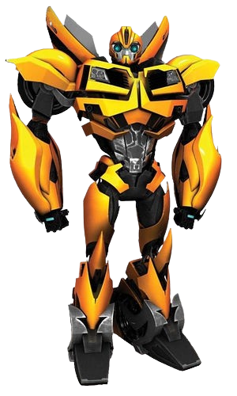
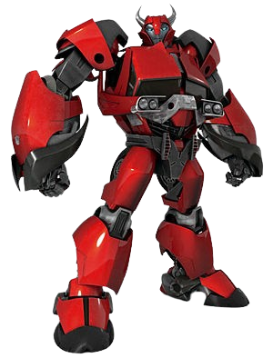

| Personaggio |
Descrizione |
Immagine |
| Optimus Prime |
Doppiato da Peter Cullen.
Leader degli Autobot. Conosciuto come Orion Pax prima che la Matrice del Comando lo scegliesse come comandante
degli Autobot, inizialmente si trasforma come nella saga cinematografica e in molte altre serie animate,
in un lungo camion rosso e blu. Combatte con spade e fucili intercambiabili con le mani |
 |
| Bumblebee |
Come nei film, Bumblebee non ha una voce propria, ma comunica attraverso gli effetti sonori elettronici.
La ragione della perdita della voce sarà rivelata nella seconda stagione. Si trasforma in una "Urbana 500",
modello di auto immaginario, molto simile alla Chevrolet Camaro gialla dei Live Action.
È dotato di una grande agilità e di due cannoni a impulsi che spuntano dal dorso del suo avambraccio.
Sfida molto spesso Knockout in alcuni inseguimenti. È molto legato all'umano Raf e con lui stringerà amicizia |
 |
| Ratchet |
Doppiato da Jeffrey Combs.
Medico della squadra, si trasforma in un'ambulanza bianca e arancione.
Il suo atteggiamento inizialmente ostile nei confronti dei tre umani aiutanti, imparerà poi a conoscerli e
a fare amicizia. Combatte poco, ma quando entra in battaglia, non sembra possedere armi da fuoco ma
solo due lame di Energon, che usa anche nelle sue "operazioni mediche". |
.jpg) |
| Arcee |
Doppiata da Sumalee Montano.
Donna Autobot, che si trasforma in una moto, come nella maggior parte delle sue incarnazioni moderne.
Anche se Arcee era, sia nella Generation 1 che altre serie televisive di colore rosa, ora è blu con riflessi
rosa. Possiede due lame che spuntano dal suo avambraccio e di due cannoni che sostituiscono la mano;
è molto agile e veloce ed esegue con grande abilità alcune mosse di karate. |
 |
| Bulkhead |
Doppiato da Kevin Michael Richardson.
Si trasforma in un gigantesco pick up Hummer ATV color verde militare. Possiede due mazze di Energon e
due blaster a ioni, entrambi sostituiscono le mani. Ha una mole enorme ed una potenza devastante che usa per proteggere
i suoi compagni e Miko, a cui si affeziona molto. |
 |
| Cliffjumper |
Doppiato da Dwayne The Rock Johnson.
Si trasformava in una vecchia Dodge Challenger rossa con delle corna di toro sul cofano.
Possiede due blaster che rimpiazzano le sue mani e la sua frase preferita è: "Chi sfida Cliffjumper, si becca le sue corna!".
Stringe un forte legame con Arcee. |
 |


.jpg)